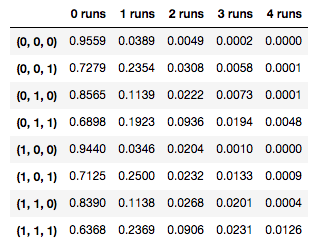
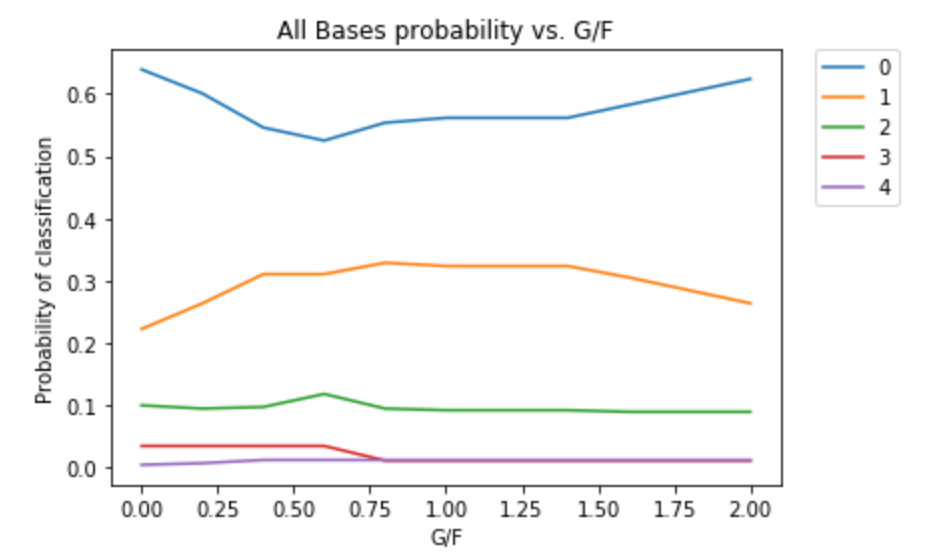
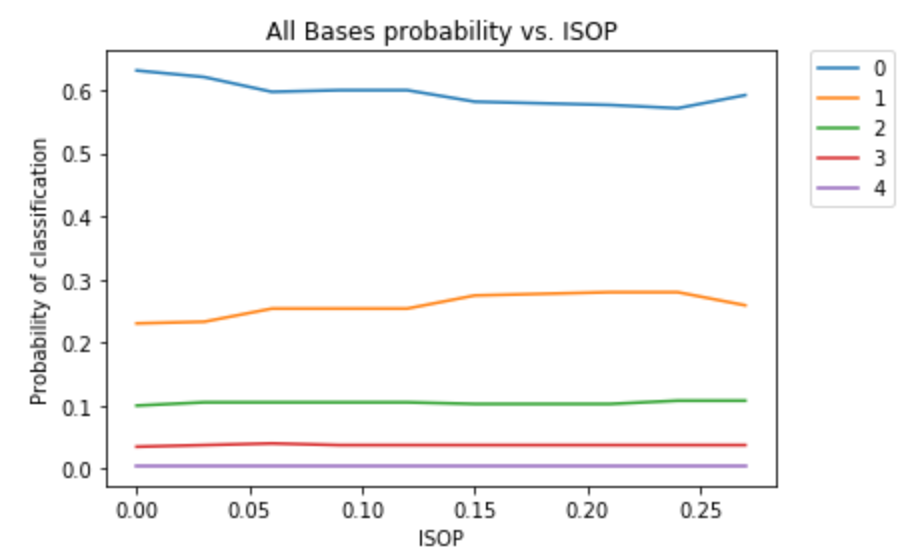

Now that we have our model (as explained in Methodology), it's time for us to answer some of these questions that we asked about in our Data section.
In short - yes. In some sense, we found here that any of our modeling techniques had the same flaw - no matter what we did, all of them predicted that every play would result in zero runs. In that most basic sense, some might claim that our model can't predict how many runs will be scored by a play.
However, our model still gave us some very important predictive power - namely, even though we couldn't get discrete classifications, we still managed to find prediction probabilities that performed significantly better than just taking a naive, random weighted sample (based on the distribution of runs scored on plate appearances in the training data). Our final ensemble model (along with many of our other models) gave us probabilities for the number of runs created by a plate appearance that more closely mirrored real-life plate appearances than a weighted random model that takes none of the predictors we used into consideration. This result is evidenced by the significant reduction in mean-squared error that we achieved through our ensemble model (as compared to a model that utilized none of the statistical predictors our model used).
Because we are able to provide probabilities for individual plate appearances that are meaningful and more accurate due to the batting, defensive, and base occupancy predictors they utilize, we have created a tool that coaches could use to assess how likely a plate appearance is to produce any number of runs. And since our tool takes things like batting statistics, defensive statistics, and base occupancies into account, which vary over the course of a baseball game, coaches can use the model situationally to predict the likelihoods of scoring runs or not for a given play in a baseball game just by entering the relevant statistics and situational predictors.
Thus, while our model might not be able to predict that a play will produce runs, it can definitely give probabilities as to how likely a play is to produce runs based on the situation you're in - and if you're a coach, this knowledge can certainly help.
In our exploratory data analysis, we saw how having runners on base linked strongly with scoring more runs on a plate appearance. Our model definitely confirmed that having runners on base is very important - it greatly improves your chance of scoring runs.
To test this hypothesis using our ensemble model, we looked at different scenarios where bases were or were
not occupied by baserunners, to see if our model would replicate the pattern we found in our exploration of the data
where having runners on base improved the average amount of runs scored. And surely enough, when we took samples for
each possible situation from our training data, we saw that same trend in the expected number of runs scored.
(Here, suppose we have a plate appearance. Then, the expected number of runs scored for that play
is calculated by taking a weighted sum of all possible outcomes from 0 to 4
runs, with each outcome weighted by its probability to occur as predicted by our model.)
Take a look at this table that we generated to summarize every possible on-base scenario, where each entry on the left corresponds
to (First Base, Second Base, Third Base) - a 0 represents that the base is unoccupied, and a 1 represents that the base
is occupied.

The most important thing to note here - the more bases that are occupied, the higher the predicted chance of scoring on a play. For instance, the predicted probability of scoring 1 run jumps dramatically from .0389 to .1139 just by getting someone on second base (represented by (0, 1, 0) in the table). Even having just one base runner on third base (represented by (0, 0, 1) in the table) leads to a predicted probability of .2354 for scoring 1 run, a dramatic increase from having one runner on second base. And as expected, the lowest chance of scoring no runs (in other words, the highest chance scoring at least one run) is predicted when all bases are loaded, with around a 37% predicted chance of scoring in that case. Thus, just as we found in the exploratory data analysis that we did, it's important to have the bases loaded in order to score runs, and even putting one more baserunner on base really improves the chances of scoring runs.
In order to investigate this question, we sampled scenarios for a variety of situations where first base was occupied, second base was occupied, third base was occupied, or all bases were occupied (bases loaded). Then, holding all other predictors constant, we tried varying different batting statistic predictors to see what kind of effects they had on the likelihood of a plate appearance yielding runs. The batting statistics that we tried to vary were ISOP (the isolated power of a batter), G/F (the number of ground balls per fly ball a batter hits), RC (the runs created by a batter), and AVG (the batting average, or percentage of times a batter gets a hit on an at-bat)..
When looking at just one base at a time, we didn't find many trends in any of these statistics using our ensemble model. For most situations, the effect of increasing or decreasing any of these statistics was relatively minimal when it came to how our predicted probabilities for each outcome changed.
One interesting trend that we noticed however, was that whether we have no one on base, or a runner on first base, second base or third base, having a player who hits more ground balls than fly balls on average actually seems to lead to an increased chance of scoring a nonzero amount of runs on a plate appearance in any of these scenarios. Below, each line represents the probability of having that number of runs scored (labeled 0 through 4), and each graph represents a different situation (no bases occupied, first base occupied, etc.)
In all four graphs, a higher ratio of ground balls to fly balls seems to give us a higher chance of geting a nonzero amount of runs scored. Thus, it seems that having a pinch hitter with a high number of ground balls compared to fly balls are generally decent at improving our chances of scoring on a specific plate appearance.
However, the most definitive result that we found of all was advice on what to do when our bases are loaded. In this scenario, our model really differentiates between different batters' chances of scoring runs, particularly for two statistics - ground balls per fly ball, and isolated power (ISOP).
When the bases are loaded, unlike for general situations, our model predicts that it is better to have a batter whose ground ball to fly ball ratio falls somewhere between 0.6 and 0.7 (meaning that they hit around 0.6 - 0.7 ground balls for every fly ball, so they hit more fly balls on average). This gives us the least chance of coming away with no runs from a plate appearance, and gives us the greatest chance of coming away with 2 runs (along with a relatively high chance of coming away with 1 run). Fewer ground balls per fly ball or more ground balls per fly ball give us a worse chance to score runs on the play, as shown by this graph (the labels 0 through 4 correspond to the probabilities of 0 runs through 4 runs, each of which is plotted as one of the five lines below):

So unlike the trend our model predicts for general situations, in the special case of having the bases loaded, our model predicts that a coach ought to put in a pinch hitter who hits more fly balls than ground balls (by a ratio of around 3:2). This makes absolute sense: we know from baseball that although ground ball hitters get the ball in play more often without having a pop-out, when the bases are loaded, a well-hit deep fly ball (even if it's a sacrifice fly so that the batter gets out) can actually guarantee that one or two runs are scored .
This idea of opting for a power hitter in a loaded-bases situation also translates over to isolated power, or ISOP. ISOP, as isolated power, is supposed to tell us how many extra bases a batter averages on their hits over a single, effectively measuring how powerful a hitter is. Players with higher ISOP are often those who hit the ball farther because they average more doubles, triples, or home runs per at bat than those with lower ISOP. From our above result for hitters who hit more fly balls than ground balls when the bases are loaded, we might then expect that a similar argument would hold for having a batter with a higher ISOP when the bases are loaded. And as the graph below shows, our model predicts a similar result (the labels 0 through 4 correspond to the probabilities of 0 runs through 4 runs, each of which is plotted as one of the five lines below):

We can see from the model predictions shown in the graph above that generally, as a player's ISOP increases, they're more likely to score runs when the bases are loaded. The least chance for yielding zero runs for a plate appearance occurs when we have ISOP is on the higher end around 0.24, and the chances of scoring one run or two runs slowly increases as ISOP increases for the batter. Thus, we can see that when the bases are loaded, a coach might want to put in batters with higher ISOPs of around .20 to .25 rather than those with lower ISOP in order to score runs on a plate appearance.
So what have we learned? Through all of the work that we've done, we now conclude by summarizing all of the above in three points:
Given more time, we'd probably take a look at doing this kind of work for not only the 2016 season's batting and fielding stats along with the 2017 play-by-play data, but also extending our dataset to include plays from 2000 onwards. Given around twenty seasons of data, we could use the increased amount of data to our advantage and oversample some higher-scoring plays to try to improve our prediction probabilities. In addition, although we didn't have time to address every possible on-base situation, we might look at more useful situations besides just that of loaded bases (for instance, the case of having a runner or runners in scoring position even if the bases are not loaded) to provide useful advice using our model in those cases.
Still, as shown above, our ensemble model provides support for all three of these points, and shows us just how powerful data science can be in helping us to gain insight into how we view baseball through the lens of the data that surrounds it. It might take a lot of difficult work with scraping, cleaning, and exploring data to make useful conclusions about how to analyze baseball plays through play-by-play data, but all of that work is definitely worth it for the conclusions that we've found.